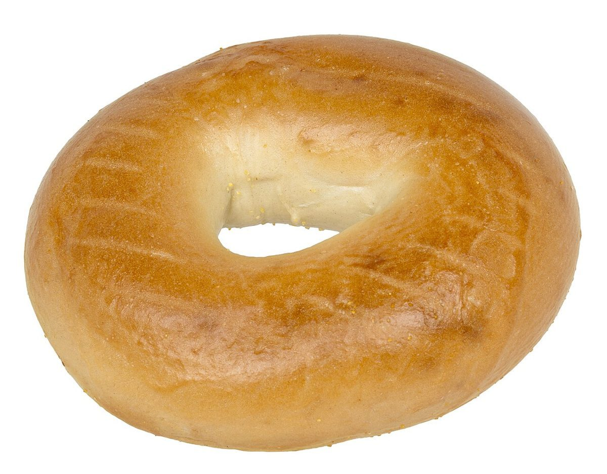
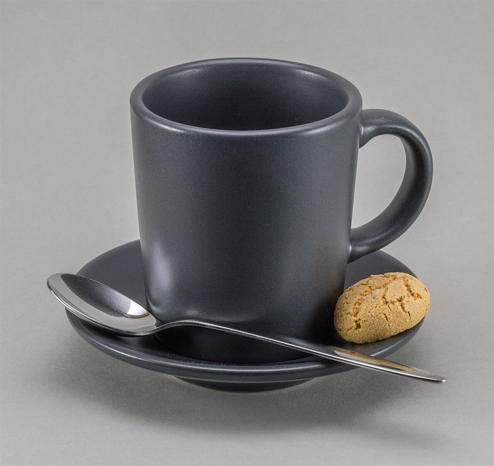
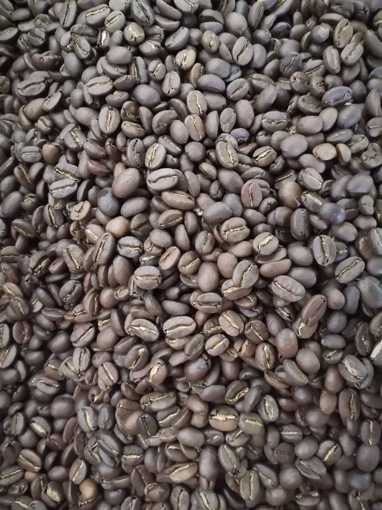

制作側のひとことお店の由来は分かりません。制作側は「ささや」という音から、小さな声の「ささやき」を連想しました。そこでこのサイトは、マンガの吹き出しのように、声の大きさを「ふつう→ひそひそ→ささやき」と段階で見せる作りにしています。制作側の連想で、お店の理念・由来とは無関係です。
声の大きさ見本(イメージ)
ふつう、ひそひそ、ささやき。
写真は声の大きさのイメージで選んだ、国外・撮影地不明のフリー素材です。お店の様子や提供内容を示すものではありません。
ふつうの声。はっきり、大きく。

ひそひそ声。点線の吹き出し。

ささやき。いちばん小さく。
ご案内
お店のこと(確認できたものだけ)
| 所在地 | 〒716-0042 岡山県高梁市下谷町4843-3 |
|---|---|
| 電話 | なし |
| 営業時間 | 準備中 |
| 定休日 | 準備中 |
| ご予約 | 準備中 |
| 駐車場 | 準備中 |
| SNS | Instagram @sasaya_coffee_bagel |